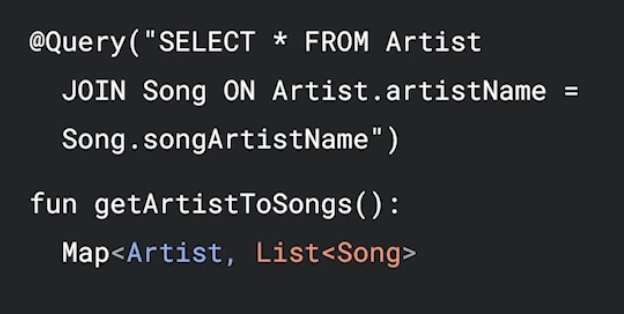
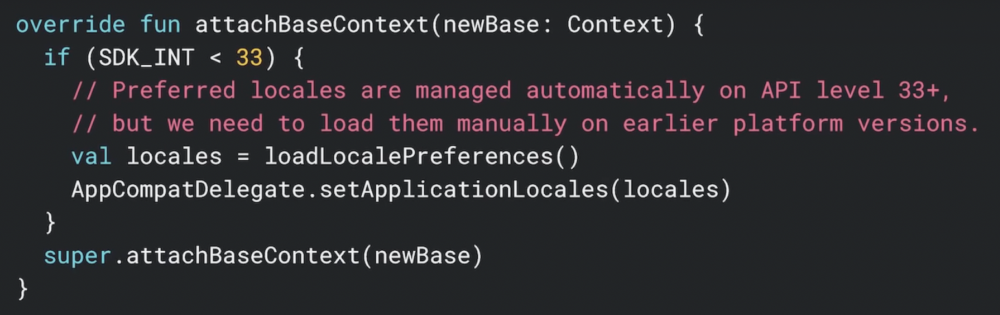
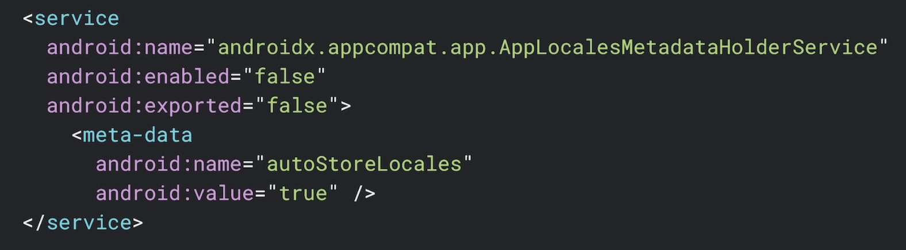
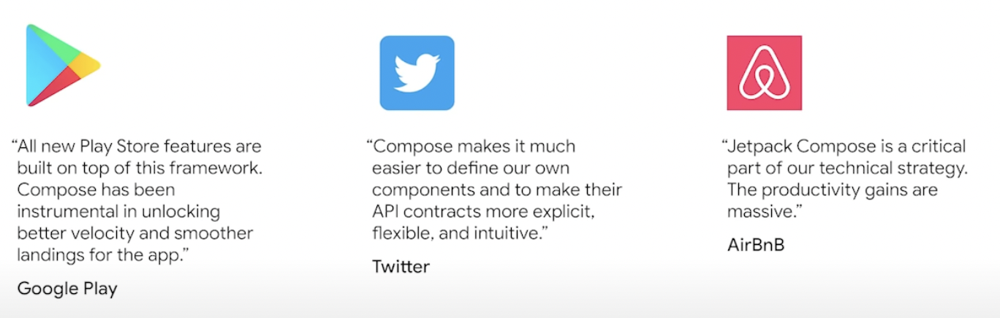
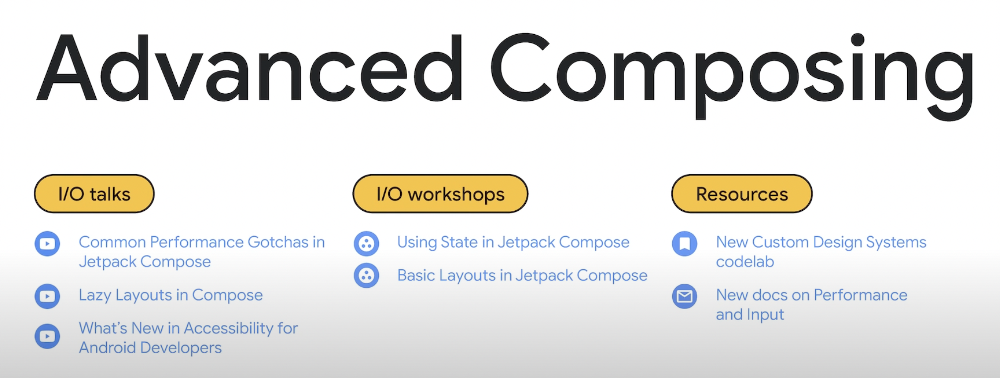
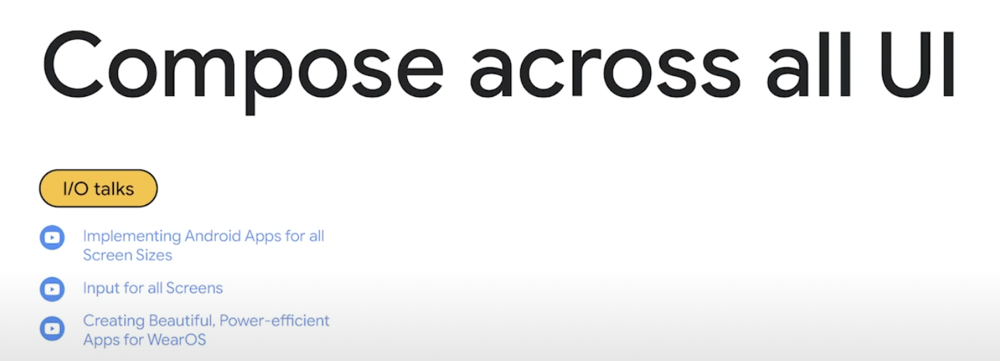

Google I/O What's new in Jetpack まとめ
Google I/O まとめ その3
概要
主にAndroid開発者目線でGoogle I/Oをまとめていきます。
内容
Room ライブラリ
-
version 2.4
- Kotlin 1.6サポート
- KSPサポート
-
version 2.5
- 100% Kotlin への書き換えをスタート
- room-paging ライブラリで Paging 3.0 をサポート
- クエリでネストされたMapや配列などをサポート

- DBのマイグレーション簡素化のために
@AutoMigrationアノテーションをサポート
Paging ライブラリ
- Paging 3.1 で Rx と Guava の統合をサポート
- loadResult.Invalid により、無効または古いデータのハンドリングを改善
- onPagesPresented / addOnPagesUpdateListener API により Empty ページでの処理を改善
- Paging 3 の codelab が用意された
Navigation ライブラリ
- Navigation Compose
- Multiple Backstack が Stable サポート
- コードを変更せずにマルチバックスタックに対応できる
- 2画面レイアウト対応
- 全ての artifact が Kotlin で書き直された
DataStore
- MAD Skills: DataStore を公開
- SharedPreferences から Proto DataStore へのマイグレーション方法を紹介
アーキテクチャ
- MAD Skills: Architecture
- モダンなAndroid開発のベストプラクティスを紹介
パフォーマンス
- JankStats ライブラリ
- アプリのパフォーマンス問題を追跡・分析するのに役立つライブラリ
- API Level 16 から使用可能
- フレームドロップなどの原因の特定に役立つヒューリスティック
- ユーザーの状態とアクションの属性データ用のUIコンテキストを提供
- レポート結果のアップロードに使用できるコールバックリスナー
- Baseline Profiles
- コンパイルの優先順位をつけアプリを高速化
- ユーザーがアプリの初回操作時にドロップするフレームを減らすことが可能
- baseline.prof がAPKに格納される
- 独自のベースラインプロファイルを作成可能（Macrobenchmark を利用する必要がある）
- Macrobenchmark ライブラリ
- API Level 23 をサポート
- 直近の更新によりテスト速度が大幅に向上
- TraceSectionMetric を利用したカステム trace-base タイミング測定など、いくつかの Experimental な機能を追加
- コードの特定のセクションのベンチマークを行うことが可能
- BaseLineProfileRule でランタイムの最適化に役立つプロファイルを作成可能
- Tracing ライブラリ
- アプリのパフォーマンスプロファイリングに活用可能
ユーザーインターフェース
-
WindowManager ライブラリ
- API Level 14 からサポート
- フォルダブル端末サポート
- 将来的に、より多くの表示タイプ・ウィンドウに拡張予定
- SlidingPaneLayout との統合
-
DragAndDrop ライブラリ
- アプリ内外からのドラッグ＆ドロップ操作をサポート
- API Level 24 からサポート
-
AppCompat ライブラリ
- Emoji2 ライブラリと統合し、新しい絵文字をサポート
- カスタム Locale の選択を API Level 14 までバックポート
- アプリ全体の Locale 設定を手動で永続化可能

- meta-data タグを利用した自動永続化もサポート

- API Level 33 以上では、プラットフォームにより自動的に永続化されるため追加対応は不要
Jetpack Compose
上位1000アプリ中100アプリが Jetpack Compose を使用

-
Nested Scroll Interop
- Compose 1.2 から、 CoordinatorLayout に Scroll Composable をスムーズに埋め込めるようになった
- Collapsing なツールバーの設定が簡単になった
-
Downloadable Fonts
- Compose 1.2 から、ダウンロード可能なフォントを利用可能に
-
Lazy Layouts
- LazyList を Grid やカスタムレイアウトなど、より高度なレイアウトに拡張
- 詳細は Lazy Layouts in Compose で。
-
Tools
- Android Studio で以下をサポート
- Live Edit
- Recomposition debugging
- Compose Animation Preview
- 詳細は What’s new in Android Studio で。
- Android Studio で以下をサポート
-
Jetpack Compose 開発のための様々な動画を紹介

-
Jetpack Compose はスマホのみならず、タブレットやフォルダブルなど様々なデバイス向けに推進

Annotation ライブラリ
- Kotlin へのマイグレーション作業を行なっている
@Returnthisアノテーションサポート@OpenForTestingアノテーションでサブクラスのオーバーライドを制限@EmptySuperアノテーションで親クラスへのoverride呼び出しを制御@DeprecatedSinceApiアノテーションで特定のAPIレベル以上の使用を制限可能